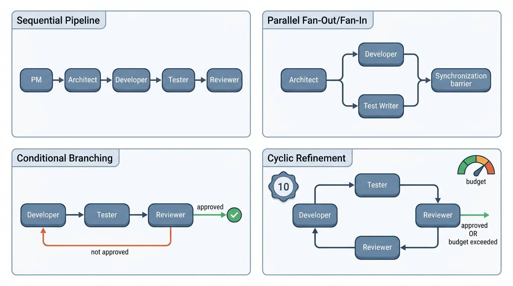
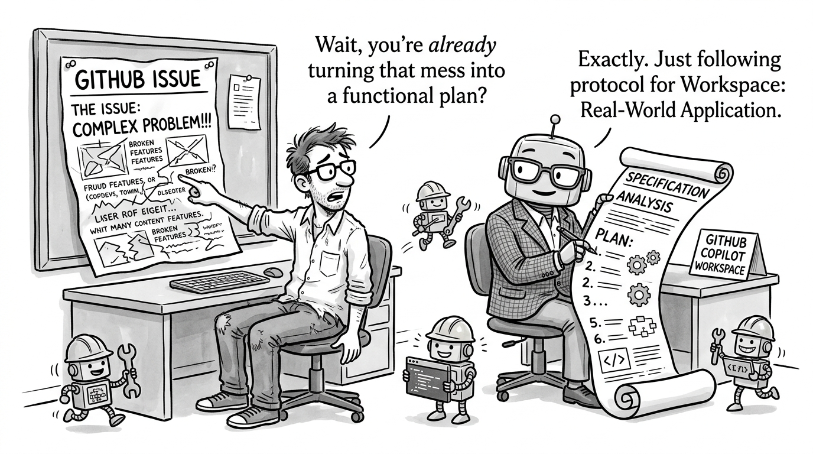

Prerequisites
This section opens the chapter. You should be comfortable with the agent loop pattern from Chapter 10 (observe, think, act, repeat) and understand how system prompts shape agent behavior. Familiarity with directed graphs from Chapter 3 will help you formalize workflow topologies. The MCP tool-calling mechanics from Chapter 12 are the foundation for how individual agents interact with their environment.
A single LLM agent with the right tools can write code. But software engineering involves multiple cognitive modes: understanding requirements, designing architecture, implementing features, writing tests, and reviewing for correctness. Assigning all of these to one agent creates a prompt that is too long, too conflicted in its objectives, and too brittle. Multi-agent teams solve this by factoring the problem into roles, each with a focused system prompt and a constrained tool set, connected through a workflow graph that determines who talks to whom and in what order. This section defines the roles, builds the graphs, and formalizes the coordination with state machine semantics.
1. Why Multiple Agents?
When five AI agents are each told "you are a senior developer," they all volunteer to be the architect, and nobody writes the tests. That failure reveals something fundamental: a single, do-everything agent struggles with real software engineering. The fix looks surprisingly like the team structures humans have refined over decades. Three observations from software engineering practice and large language model (LLM) behavior make the case concrete:
Separation of concerns. A system prompt that says "you are a senior developer who writes clean Python" produces better code than one that says "you are a developer, tester, reviewer, and project manager." Just as human teams benefit from specialization, LLM agents produce higher-quality outputs when their instructions are focused. Each agent can carry a smaller context window, reducing the chance of the model losing track of earlier instructions.
Adversarial improvement. A developer agent will naturally produce code that "looks right" to itself. A separate reviewer agent, primed with a different perspective (security, performance, correctness), catches errors the developer misses. This is the multi-agent analogue of code review, and empirical results from Du et al. (2023) show that multi-agent debate improves factual accuracy by roughly 10% to 20% on reasoning benchmarks compared to single-agent generation.
Workflow control. Sequential, parallel, and conditional execution patterns are easier to express, monitor, and debug when each step is an explicit agent node rather than an implicit phase inside a single agent's chain-of-thought. If the architect's design fails review, you can re-route back to the architect node without restarting the entire pipeline. In short: split the mind into roles, wire the roles into a graph, and let the graph enforce the discipline that a single prompt never could.
Common Misconception
A frequent mistake is assuming that more agents always produce better results. Adding agents introduces coordination overhead: each handoff between agents risks information loss, adds latency, and costs tokens. A two-agent setup (developer plus reviewer) often outperforms a five-agent pipeline on small, well-scoped tasks. Use multiple specialized roles when the task genuinely requires distinct cognitive modes; for a one-function bug fix, a single agent with a clear prompt is the better choice.
Think of each agent as a function with a typed signature: it takes structured input (a task description, context from previous agents, the current codebase state) and produces structured output (a design document, a code patch, a test report). The workflow graph is a program that calls these functions in the right order, routes outputs to inputs, and handles errors. This framing connects directly to the \((S, A, T, f, C)\) search framework (state, actions, transitions, objective, constraints) from Chapter 1: the state space \(S\) is the evolving software artifact, the actions \(A\) are agent invocations, the transition function \(T\) is the workflow graph, and the objective \(f\) is the acceptance criteria for the final pull request (PR).
2. The Five Canonical Roles
Inspired by ChatDev (Qian et al., 2023) and MetaGPT (Hong et al., 2024), we define five canonical agent roles that mirror real software team positions. Each role is characterized by its system prompt focus, tool set, input schema, and output schema.
2.1 Product Manager (PM)
The PM agent translates a raw issue or feature request into a structured requirements document. It reads the issue text, examines existing code for context, and produces acceptance criteria, user stories, and priority rankings. The PM does not write code; its output is a specification that downstream agents consume.
from dataclasses import dataclass, field
@dataclass
class AgentRole:
"""Defines an agent's identity, capabilities, and interface."""
name: str
system_prompt: str
tools: list[str] # names of available MCP tools
input_schema: type # Pydantic model for expected input
output_schema: type # Pydantic model for structured output
max_tokens: int = 4096
temperature: float = 0.2 # low temp for deterministic roles
@dataclass
class Requirement:
"""A single requirement extracted by the PM agent."""
id: str
description: str
acceptance_criteria: list[str]
priority: str # "must", "should", "could"
affected_files: list[str] = field(default_factory=list)
@dataclass
class PMOutput:
"""Structured output from the PM agent."""
summary: str
requirements: list[Requirement]
scope_notes: str
estimated_complexity: str # "small", "medium", "large"
pm_role = AgentRole(
name="product_manager",
system_prompt="""You are a senior product manager. Given a GitHub issue,
analyze it and produce a structured requirements document. Identify:
1. What the user actually needs (not just what they asked for)
2. Acceptance criteria that are testable and specific
3. Which files in the codebase are likely affected
4. The complexity of the change (small/medium/large)
Be precise. Every acceptance criterion must be verifiable by a test.""",
tools=["read_file", "search_codebase", "list_directory"],
input_schema=dict, # raw issue payload
output_schema=PMOutput,
temperature=0.3,
)
2.2 Architect
The architect agent takes the PM's requirements and produces a technical design: which components to modify, what interfaces to create, how data flows between modules. It has access to the full repository structure and can read (but not write) any file. The architect's output is a design document with file-level change descriptions that the developer agent follows.
@dataclass
class DesignDecision:
"""A single architectural decision."""
component: str
change_type: str # "create", "modify", "delete"
description: str
rationale: str
dependencies: list[str]
@dataclass
class ArchitectOutput:
"""Structured output from the architect agent."""
design_summary: str
decisions: list[DesignDecision]
api_contracts: list[dict] # OpenAPI-style interface specs (machine-readable API descriptions)
risk_assessment: str
architect_role = AgentRole(
name="architect",
system_prompt="""You are a senior software architect. Given requirements,
produce a technical design that:
1. Minimizes changes to existing code (prefer extension over modification)
2. Defines clear API contracts between components
3. Identifies risks and proposes mitigations
4. Follows the existing patterns in the codebase
Never write implementation code. Your output is a design document.""",
tools=["read_file", "search_codebase", "list_directory", "read_tests"],
input_schema=PMOutput,
output_schema=ArchitectOutput,
temperature=0.2,
)
2.3 Developer
The developer agent writes code. It receives the architect's design and the PM's
requirements, then produces file-level patches. Unlike the architect, the developer
has write access to the codebase (through tools like write_file and
apply_patch). Its temperature is set low (0.1) for deterministic, specification-
conforming code generation.
@dataclass
class FileChange:
"""A single file-level change produced by the developer agent."""
file_path: str
change_type: str # "create", "modify", "delete"
content: str # full file content or unified diff
language: str # "python", "yaml", etc.
@dataclass
class DeveloperOutput:
"""Structured output from the developer agent."""
changes: list[FileChange]
implementation_notes: str
requirements_addressed: list[str] # IDs from PMOutput.requirements
developer_role = AgentRole(
name="developer",
system_prompt="""You are a senior Python developer. Given a design document
and requirements, implement the changes as file-level patches. Follow the
architect's plan exactly:
1. Create or modify only the files specified in the design
2. Write clean, well-documented code that passes linting
3. Include inline comments for non-obvious logic
4. List which requirement IDs your changes address
Never deviate from the architect's design. If the design is ambiguous,
note the ambiguity in implementation_notes rather than guessing.""",
tools=["read_file", "write_file", "apply_patch", "run_linter"],
input_schema=ArchitectOutput,
output_schema=DeveloperOutput,
temperature=0.1,
)
Checkpoint
So far: we have defined three of five canonical agent roles (PM, Architect, Developer), each with a focused system prompt, a constrained tool set, typed input/output schemas, and a distinct responsibility boundary; the remaining two roles (Tester and Reviewer) complete the team by adding verification and adversarial feedback.
2.4 Tester
The tester agent generates tests for the developer's code. It reads the acceptance criteria from the PM, the API contracts from the architect, and the implementation from the developer. It produces test files and runs them, reporting pass/fail status with diagnostic information. Chapter 18 covers this role in depth.
2.5 Reviewer
The reviewer agent performs code review. It reads the diff produced by the developer, checks it against the architect's design and the PM's requirements, and produces review comments with severity levels (blocker, warning, suggestion). The reviewer is the adversarial complement to the developer: its system prompt explicitly instructs it to find bugs, security issues, and style violations.
@dataclass
class ReviewComment:
"""A single code review comment."""
file: str
line: int
severity: str # "blocker", "warning", "suggestion"
category: str # "bug", "security", "style", "performance"
message: str
suggested_fix: str | None = None
@dataclass
class ReviewerOutput:
"""Structured output from the reviewer agent."""
approved: bool
comments: list[ReviewComment]
summary: str
blockers_count: int
reviewer_role = AgentRole(
name="reviewer",
system_prompt="""You are a senior code reviewer. Review the diff against
the design document and requirements. Look for:
1. Correctness bugs: off-by-one errors, null checks, edge cases
2. Security issues: injection, path traversal, secrets in code
3. Design violations: deviations from the architect's plan
4. Test coverage gaps: untested branches and error paths
Mark issues as blocker (must fix), warning (should fix), or suggestion.
Set approved=true ONLY if there are zero blockers.""",
tools=["read_file", "read_diff", "search_codebase", "run_tests"],
input_schema=dict, # diff + design + requirements
output_schema=ReviewerOutput,
temperature=0.1, # very low: deterministic review
)
Consider a GitHub issue: "Add CSV export to the experiment dashboard." A single agent
given this task might jump straight to writing a download_csv() function. A
multi-agent team handles it differently. The PM agent identifies that "CSV export"
actually means three things: exporting the current view, exporting filtered results,
and exporting the full dataset. It writes three acceptance criteria. The architect
decides to add an Exporter interface with a CSVExporter implementation,
keeping the door open for future formats (JSON, Parquet). The developer implements the
interface and the CSV variant. The tester writes tests for all three export scenarios
plus edge cases (empty data, Unicode characters, large datasets). The reviewer catches
that the developer forgot to sanitize user input in filenames, a potential path
traversal vulnerability. The final PR is better than what any single agent would have
produced.
3. Workflow Graphs
When a multi-agent pipeline has no explicit coordination structure, agents duplicate work, contradict each other's outputs, and silently drop requirements between handoffs. The workflow graph is the mechanism that prevents this.
A workflow graph \(G = (V, E, \sigma)\) defines how agents collaborate. The vertices \(V\) are agent nodes, the edges \(E\) are message channels between agents, and \(\sigma: V \to \text{AgentRole}\) maps each node to its role configuration. The graph is directed: an edge \((u, v)\) means agent \(u\) can send its output to agent \(v\). Four canonical topologies cover the most common patterns. Figure 17.1 illustrates the most common topology: a sequential pipeline with a conditional review loop that routes rejected code back to the developer. Figure 17.1.1 illustrates multi-agent workflow topologies.

A workflow graph is a directed graph whose nodes are agent invocations and whose edges carry structured data: one agent's output becomes the next agent's input. Without an explicit graph, multi-agent coordination devolves into ad hoc message passing with no guarantees about ordering, completeness, or termination. An executor walks the graph node by node, runs each agent, and evaluates condition functions on outgoing edges to pick the next node. State accumulates and flows forward along the edges. Use a workflow graph (rather than a single monolithic agent or unstructured agent chat) whenever the task decomposes into three or more distinct steps with typed handoffs between them; for simpler two-step pipelines, a direct function call is sufficient.
3.1 Sequential Pipeline
The simplest topology is a linear chain: PM \(\to\) Architect \(\to\) Developer \(\to\) Tester \(\to\) Reviewer. Each agent runs once, passing its output to the next. This is easy to implement and debug, but rigid: if the reviewer finds a blocker, the pipeline must restart from the developer (or earlier).
from typing import Callable, Any
class WorkflowGraph:
"""A directed graph of agent nodes with typed edges."""
def __init__(self):
self.nodes: dict[str, AgentRole] = {}
self.edges: dict[str, tuple[str, Callable | None]] = {}
# edge mapping: source -> (target, optional_condition)
def add_node(self, name: str, role: AgentRole):
self.nodes[name] = role
def add_edge(self, source: str, target: str,
condition: Callable[[Any], bool] | None = None):
"""Add a directed edge. If condition is provided, the edge
is only traversed when condition(source_output) returns True."""
self.edges[source] = (target, condition)
def get_next(self, current: str, output: Any) -> str | None:
"""Given the current node and its output, return the next node."""
if current not in self.edges:
return None # terminal node
target, condition = self.edges[current]
if condition is None or condition(output):
return target
return None
def build_sequential_pipeline() -> WorkflowGraph:
"""Build a simple PM -> Architect -> Developer -> Tester -> Reviewer pipeline."""
graph = WorkflowGraph()
graph.add_node("pm", pm_role)
graph.add_node("architect", architect_role)
graph.add_node("developer", developer_role)
graph.add_node("tester", tester_role)
graph.add_node("reviewer", reviewer_role)
graph.add_edge("pm", "architect")
graph.add_edge("architect", "developer")
graph.add_edge("developer", "tester")
graph.add_edge("tester", "reviewer")
# reviewer is terminal
return graph
3.2 Parallel Fan-Out / Fan-In
Some tasks benefit from running agents in parallel. After the architect produces a design, the developer and tester can work simultaneously: one writes the implementation while the other writes test stubs from the API contracts. A fan-out node spawns these concurrent executions; a fan-in node collects their results. This pattern cuts wall-clock time but requires conflict detection, since both agents may target the same file.
import asyncio
async def parallel_fan_out(
agents: list[tuple[AgentRole, Any]], # (role, input) pairs
run_agent: Callable, # async function to execute one agent
) -> list[Any]:
"""Run multiple agents in parallel and collect results."""
tasks = [
asyncio.create_task(run_agent(role, inp))
for role, inp in agents
]
results = await asyncio.gather(*tasks, return_exceptions=True)
# check for failures
failures = [r for r in results if isinstance(r, Exception)]
if failures:
raise AgentExecutionError(
f"{len(failures)}/{len(results)} agents failed",
failures=failures,
)
return results
async def fan_in_merge(results: list[Any], merge_strategy: str = "concat") -> Any:
"""Merge parallel agent outputs into a single state object."""
if merge_strategy == "concat":
# simple concatenation for independent outputs
return {"parallel_outputs": results}
elif merge_strategy == "conflict_check":
# detect and resolve file-level conflicts
all_files = {}
for result in results:
for file_path, content in result.get("files", {}).items():
if file_path in all_files:
raise ConflictError(
f"Both agents modified {file_path}"
)
all_files[file_path] = content
return {"files": all_files}
else:
raise ValueError(f"Unknown merge strategy: {merge_strategy}")
3.3 Conditional Branching
Parallel fan-out works well when agents operate on independent subtasks, but many real workflows require decisions: should the pipeline proceed, loop back, or halt? That question calls for conditional edges.
Conditional edges route the workflow based on agent output. The most common pattern is the review gate: if the reviewer approves, proceed to merge; if not, route back to the developer with the review comments. This requires a condition function on the edge that inspects the reviewer's output.
def build_review_loop() -> WorkflowGraph:
"""Build a workflow with a conditional review loop."""
graph = WorkflowGraph()
graph.add_node("developer", developer_role)
graph.add_node("tester", tester_role)
graph.add_node("reviewer", reviewer_role)
graph.add_edge("developer", "tester")
graph.add_edge("tester", "reviewer")
# conditional: reviewer routes back to developer if not approved
graph.add_edge(
"reviewer", "developer",
condition=lambda output: not output.approved
)
# if approved, reviewer is terminal (no edge taken)
return graph
Mental Model
Think of a multi-agent workflow like a restaurant kitchen during dinner service. The expeditor (PM) reads the order ticket and calls out what needs to happen. The head chef (architect) decides which station handles each component and in what sequence. The line cooks (developers) each prepare their assigned dish. The quality checker (tester) tastes and verifies plating before anything leaves the pass. The expeditor gives a final check (reviewer) and either sends the plate to the dining room or fires it back to the line cook for a fix. The kitchen works because each station has a single responsibility, a specific set of tools (grill, sauté pan, oven), and a structured handoff (the plate moves physically along the pass). Giving one cook all the stations would be slower and produce worse food, just as giving one agent all the roles produces worse code.
3.4 Cyclic Refinement
Cyclic workflows generalize conditional branching to arbitrary loops. A refinement cycle lets multiple agents iterate until convergence: the developer writes code, the tester runs tests, the reviewer provides feedback, and the developer revises. The cycle terminates when the reviewer approves or a maximum iteration count is reached. Without the iteration cap, cyclic workflows can loop indefinitely, consuming tokens and time.

Formally, a cyclic workflow is a directed graph with at least one back edge (where a back edge is an edge that points from a node to one of its predecessors, creating a cycle). The termination condition \(\tau: S \to \{0, 1\}\) maps the current state to a halt decision. Safe cyclic workflows guarantee termination by enforcing \(\sum_{i=1}^{k} c_i \leq B\), where \(c_i\) is the token cost of iteration \(i\) and \(B\) is the total budget. In practice, we set both an iteration limit (typically 3 to 5 review rounds) and a token budget.
async def run_cyclic_workflow(
graph: WorkflowGraph,
initial_input: Any,
run_agent: Callable,
max_iterations: int = 5,
token_budget: int = 100_000,
) -> dict:
"""Execute a cyclic workflow graph with termination guarantees."""
current_node = "developer" # starting node
state = initial_input
total_tokens = 0
history = []
for iteration in range(max_iterations):
role = graph.nodes[current_node]
result = await run_agent(role, state)
# track cost
total_tokens += result.usage.total_tokens
history.append({
"iteration": iteration,
"node": current_node,
"output_summary": result.summary,
"tokens": result.usage.total_tokens,
})
# check budget
if total_tokens >= token_budget:
return {
"status": "budget_exceeded",
"history": history,
"final_output": result,
}
# find next node (may be None if terminal)
next_node = graph.get_next(current_node, result)
if next_node is None:
return {
"status": "completed",
"history": history,
"final_output": result,
}
# update state with agent output and move to next node
state = {**state, f"{current_node}_output": result}
current_node = next_node
return {
"status": "max_iterations_reached",
"history": history,
"final_output": result,
}
Every iteration through a review cycle costs tokens, latency, and money. If the developer and reviewer are both using GPT-4-class models, a single review round might cost \$0.50 to \$2.00 in API calls (circa 2024 pricing). Five rounds of review on a medium-sized change can exceed \$10. This is still far cheaper than a human developer's time, but it means workflow design has direct cost implications. The optimal strategy is to invest more tokens in the architect (getting the design right upfront) to reduce the number of developer-reviewer cycles. This mirrors a widely cited observation in software engineering that fixing bugs found in code review is typically an order of magnitude cheaper than fixing bugs found in production (Boehm and Basili, 2001).
4. Formalizing Workflows as State Machines
The workflow graphs above define structure, but how do we reason about their correctness: whether they always terminate, whether every node is reachable, whether the same input always follows the same path? The answer is to recognize that a workflow graph with conditional edges is a finite state machine (FSM), a mathematical model of computation with a fixed number of states and well-defined transitions between them. Each agent node is a state, each edge is a transition, and the condition functions are the transition guards. This formalism gives us powerful analysis tools:
Reachability: Can the workflow reach a terminal state from every starting state? If not, the workflow has dead ends that will hang without producing output.
Liveness: Does every cycle have a guaranteed exit? Without termination conditions, a review loop can spin forever.
Determinism: Given the same input, does the workflow always follow the same path? Non-determinism (from LLM stochasticity, the inherent randomness in token sampling) means the same issue might take two review rounds on one run and four on another. This is acceptable but must be budgeted for.
$$ \text{FSM} = (Q, \Sigma, \delta, q_0, F) $$where \(Q\) is the set of agent states, \(\Sigma\) is the set of possible agent outputs (the alphabet), \(\delta: Q \times \Sigma \to Q\) is the transition function (workflow graph with conditions), \(q_0\) is the initial state (typically the PM), and \(F \subseteq Q\) is the set of accepting states (approved PR, terminal nodes).
The workflow graph we built from scratch in ~100 lines is precisely what
LangGraph provides
out of the box. LangGraph models workflows as StateGraph objects with typed
state, conditional edges, and built-in persistence. The same five-node pipeline
takes about 30 lines:
from langgraph.graph import StateGraph, END
from typing import TypedDict
class TeamState(TypedDict):
issue: str
requirements: dict | None
design: dict | None
code: dict | None
tests: dict | None
review: dict | None
iteration: int
def build_langgraph_pipeline() -> StateGraph:
graph = StateGraph(TeamState)
graph.add_node("pm", pm_agent_fn)
graph.add_node("architect", architect_agent_fn)
graph.add_node("developer", developer_agent_fn)
graph.add_node("tester", tester_agent_fn)
graph.add_node("reviewer", reviewer_agent_fn)
graph.set_entry_point("pm")
graph.add_edge("pm", "architect")
graph.add_edge("architect", "developer")
graph.add_edge("developer", "tester")
graph.add_edge("tester", "reviewer")
# conditional: loop back or finish
graph.add_conditional_edges(
"reviewer",
lambda state: "developer" if not state["review"]["approved"]
and state["iteration"] < 5 else END,
)
return graph.compile()
LangGraph handles persistence (checkpoint the state after every node so you can resume from failures), streaming (receive intermediate outputs as they are produced), and visualization (render the graph as a Mermaid diagram). The trade-off: you depend on the LangGraph API, which stabilized considerably with its 0.2 release (2025) and is now the most widely adopted agent orchestration library in the LangChain ecosystem. Our from-scratch version makes the mechanics transparent; LangGraph makes them production-ready.
5. Role Design Principles
State machine formalism tells you whether a workflow will terminate and which states it can reach, but it says nothing about whether the individual agents inside those states are well designed. That question is governed by a set of role design principles.
Effective agent roles follow four design principles distilled from ChatDev, MetaGPT, and production multi-agent systems:
Single responsibility. Each agent does one thing well. The PM does not design; the architect does not code; the reviewer does not fix bugs. When an agent's scope creeps, split it into two agents.
Structured interfaces. Agents communicate through typed schemas (Pydantic models, where Pydantic is a Python library that enforces type constraints on data classes at runtime, or JSON Schema), not free-form text. This prevents the "telephone game" problem where information degrades as it passes through multiple agents. MetaGPT demonstrated that structured outputs (Product Requirements Documents (PRDs), system designs, API specs) outperform unstructured chat between agents by approximately 30% on code generation benchmarks.
Constraining What Each Agent Can Do
Minimal tool sets. Each agent gets only the tools it needs. The PM can read files but not write them. The developer can write files but not deploy. The reviewer can read diffs and run tests but not modify code. This is the principle of least privilege applied to agent tooling, and it mirrors the MCP security model from Chapter 12.
Observable outputs. Every agent produces structured output that can be logged, inspected, and replayed. This is essential for debugging multi-agent systems: when the final PR has a bug, you need to trace which agent introduced it and what inputs led to the error. Chapter 22 (AgentOps) covers observability tooling in detail.
Research Frontier
Current multi-agent systems use pre-defined roles and fixed workflow graphs. Active research explores self-organizing teams where agents dynamically assign roles based on the task. OpenAI's Swarm framework (2024) introduced lightweight "handoff" primitives that let agents transfer control to specialists at runtime without a pre-built graph (as of 2025, OpenAI superseded Swarm with the Agents SDK, which adds built-in tracing, guardrails, and structured handoff objects for production use), and Anthropic's multi-agent research (2025) demonstrated that tool-use delegation between Claude instances with constrained authority produces more reliable outputs than flat peer-to-peer topologies. Meanwhile, Microsoft's AutoGen v0.4 (2024) introduced a "group chat manager" pattern where a meta-agent observes the conversation and dynamically selects which specialist speaks next, replacing static workflow edges with learned routing (AutoGen was subsequently restructured into the AG2 community fork and the AutoGen 0.4 stable release, both of which retained the group chat manager as a core abstraction). The frontier question: can an agent team discover its own optimal organization the same way human teams evolve their processes? This connects to the organizational learning literature and to the autonomous software organizations we discuss in Chapter 24.
Try It: Build a Two-Agent Code Review Pipeline
Build a minimal multi-agent workflow using Python and any LLM API you have access to.
(1) Install the openai Python package (it works with OpenAI, Anthropic via
proxy, or any OpenAI-compatible endpoint). Create two files: developer_agent.py
and reviewer_agent.py.
(2) In developer_agent.py, write a function that takes a task description string
and returns generated Python code by calling the LLM with a system prompt like "You are
a Python developer. Write clean, tested code for the given task. Return only the code."
(3) In reviewer_agent.py, write a function that takes the generated code and
returns a JSON object with fields approved (bool), comments (list of
strings), and severity ("blocker" or "suggestion") by calling the LLM with a
reviewer system prompt.
(4) Create pipeline.py that calls the developer, passes the result to the
reviewer, and if approved is false, feeds the review comments back to the developer
for a second attempt (maximum two iterations).
(5) Test with a simple task like "Write a function that computes the nth Fibonacci number
with memoization." Observe how the reviewer catches edge cases (negative input, non-integer
input) that the developer's first pass misses.
Exercise 17.1.1
You have a three-agent pipeline: Developer, Tester, Reviewer. The Reviewer's output
schema includes approved: bool and blockers_count: int. The
conditional edge routes back to the Developer when approved is false. If the
Developer's temperature is set to 0.0 (fully deterministic) and it receives the same
review comments on two consecutive iterations, what will happen to the workflow, and
how would you modify the termination condition to handle this case?
Hint
A deterministic developer given identical inputs will produce identical outputs. The reviewer will then produce the same rejection. Think about what the iteration cap prevents, and consider adding a "staleness" check that compares consecutive developer outputs and forces termination (or escalates to a human gate) when the diff between iterations is empty.
Step-Through: Cyclic Review Workflow
Trace through run_cyclic_workflow with a concrete example. Initial state:
max_iterations=3, token_budget=10000. Iteration 0: the Developer
node runs, produces code, uses 2800 tokens. total_tokens = 2800. The Tester
is next (unconditional edge). Iteration 1: Tester runs, uses 1500 tokens.
total_tokens = 4300. The Reviewer is next. Iteration 2: Reviewer runs, uses
1200 tokens. total_tokens = 5500. Reviewer output:
approved=false. The conditional edge fires, routing back to Developer.
Iteration 3 would start, but iteration=3 equals max_iterations=3,
so the for loop exits. Return value: status="max_iterations_reached",
history has three entries, final_output is the Reviewer's rejection.
The code was never approved, but the workflow terminated safely. Had the Reviewer used
5000 tokens instead (pushing total_tokens to 9300) and the Developer then
used 1500 on the next pass (total_tokens = 10800 ≥ 10000), the budget
guard would have fired first with status="budget_exceeded".
Real-World Application: GitHub Copilot Workspace
GitHub Copilot Workspace (2024) implements precisely the role decomposition described in this section. When a developer opens a GitHub issue, the system spawns a Specification agent that analyzes the issue and repository to produce a structured plan, then hands off to an Implementation agent that generates file-level code changes, followed by a Validation agent that runs the project's test suite against the proposed changes. Each agent operates with a distinct system prompt and restricted tool access, connected through a sequential pipeline with a conditional loop back to implementation when tests fail. As of 2025, Copilot Workspace reached general availability and was integrated into the broader GitHub Copilot coding agent, which extends the same multi-agent pipeline with autonomous pull request creation and iterative CI-driven repair loops.
The Architect Who Wouldn't Stop Architecting
During early experiments with ChatDev (Qian et al., 2023), researchers discovered that the Architect agent, when given access to the code editor, would sometimes refactor the Developer's working implementation into a more "elegant" design pattern, breaking passing tests in the process. The fix was the minimal-tool-set principle: the Architect lost write access entirely. This mirrors a well-known phenomenon in human teams called "architecture astronautics," where senior engineers redesign working systems for aesthetic reasons. The lesson for both silicon and carbon teams: restrict write access to the role whose job is to write.
Lab: Measuring Role Count vs. Output Quality
Goal: Empirically determine whether adding more agent roles improves code
quality on a fixed task, or whether coordination overhead eventually dominates.
Tools: Python, the openai package (or any OpenAI-compatible API),
and a code quality linter such as ruff (which, as of 2025, has largely replaced pylint and flake8 as the default Python linter due to its speed and broad rule coverage).
Setup: Pick a small coding task (e.g., "implement a thread-safe Least Recently Used (LRU) cache
with Time To Live (TTL) expiration"). Run it through four configurations: (A) a single agent with a
combined prompt, (B) a two-agent pipeline (developer + reviewer), (C) a three-agent
pipeline (architect + developer + reviewer), and (D) the full five-agent pipeline from
this section. For each configuration, record: total tokens consumed, wall-clock time,
number of lint warnings in the final output, and whether the generated code passes a
hand-written test suite of 10 edge cases.
What to vary: Try the same experiment with temperature 0.0 vs. 0.7 for the
developer role. Observe whether higher temperature increases the value of the reviewer
role.
What to observe: Plot test-pass rate and lint score against agent count.
Identify the point where adding another role no longer improves quality but does
increase cost. Expect a plateau or slight decline at configuration D for simple tasks.
Exercises
- Conceptual: Draw the workflow graph (nodes and edges) for a multi-agent team that handles bug reports. The team should include a triager (classifies severity and assigns to a component), a reproducer (writes a minimal reproduction script), a developer (fixes the bug), and a verifier (runs the reproduction script against the fix). Include at least one conditional edge and one back edge. What is the maximum number of iterations before the workflow must terminate?
-
Coding: Extend the
WorkflowGraphclass to support parallel fan-out edges. Add anadd_parallel_edgesmethod that takes a source node and a list of target nodes. Implement anasync run()method that executes parallel targets concurrently usingasyncio.gatherand merges their results before continuing to the next node. Test with a graph where the architect fans out to both a developer and a test-plan writer. - Analysis: A review cycle with GPT-4o costs approximately \$0.30 per iteration (circa 2024 pricing; combined developer + reviewer calls). If the average task requires 2.5 review rounds and you process 200 issues per week, what is the weekly API cost for the review loop alone? How does this compare to the cost of a junior developer's code review time (assume \$50/hour, 15 minutes per review)?
What's Next
With roles defined and workflows formalized, Section 17.2: Coordination and Human Gates tackles the harder problem: how agents share state, pass messages, debate design decisions, and hand control to humans when the stakes are high. The workflow graph tells you who talks to whom; the coordination layer tells you how they talk and when a human must intervene.